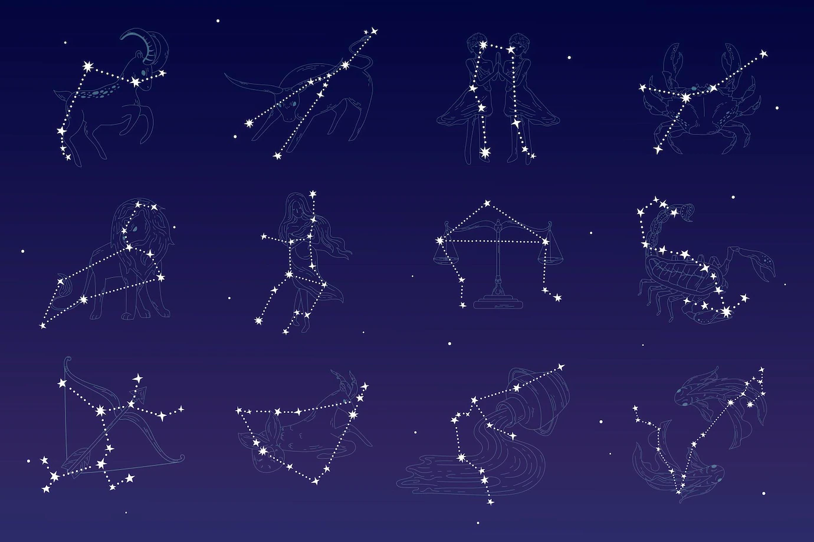

Сазвежђе или констелација звезда је део звезданог неба у којем група звезда блиских једна другој заједно образују неки замишљени лик кад се међусобно споје замишљеним цртама. Небо се може гледати са било које тачке на Земљи, где се може видети хиљаде светлих тачкица. Те тачкице представљају звезде које припадају нашој Галаксији, Млечном путу. У обичном говору, сазвежђе представља оно што астрономи називају астеризам: групу небеских тела, најчешће звезда, која изгледају тако да образују одређени лик на небу или су барем видно повезана једна за друге.
Сазвежђа се деле по годишњим добима када се најбоље виде на пролећна сазвежђа, летња сазвежђа, јесења сазвежђа и зимска сазвежђа Постоје још две посебне групе сазвежђа, циркумполарна и антициркумполарна. Циркумполарна су она која се виде увек са одређене тачке на Земљи, док су антициркумполарна она сазвежђа која се никад не могу видети са одређене тачке на планети.
Зодијак (од грчке речи зодион — „животињски круг”) представља замишљени појас или прстен на небеској сфери у коме се налазе 13 сазвежђа: Ован, Бик, Близанци, Рак, Лав, Девица, Вага, Змијоноша, Шкорпија, Стрелац, Јарац, Водолија и Рибе. Данас се услед прецесије време обитавања Сунца у једном зодијачком сазвежђу не поклапа са периодом трајања зодијачког знака у астрологији (разлика је око месец дана). Зодијак и зодијачки знаци су познати још од 2400. године пре нове ере, код Египћана. Некада су служили за одређивање календара, а затим су употребљавани у сврхе врачања и прављења хороскопа.
Налази се у густом звезданом појасу Млечног пута.Ту има толико пуно звезда да оне, када гледамо у диск наше Галаксије, чине реку млечне светлости преко неба.
Звезде се на северном небу окрећу око Северњаче (Polaris), сјајне звезде скоро у самом средишту карте. Она се налази у сазвежђу Мали медвед (Ursa Minor) или Мала кола, у близини свог пара Великог медведа. Седам звезда у доњем делу задњице Великог медведа (Ursa Maior) се зову још и Велика кола.